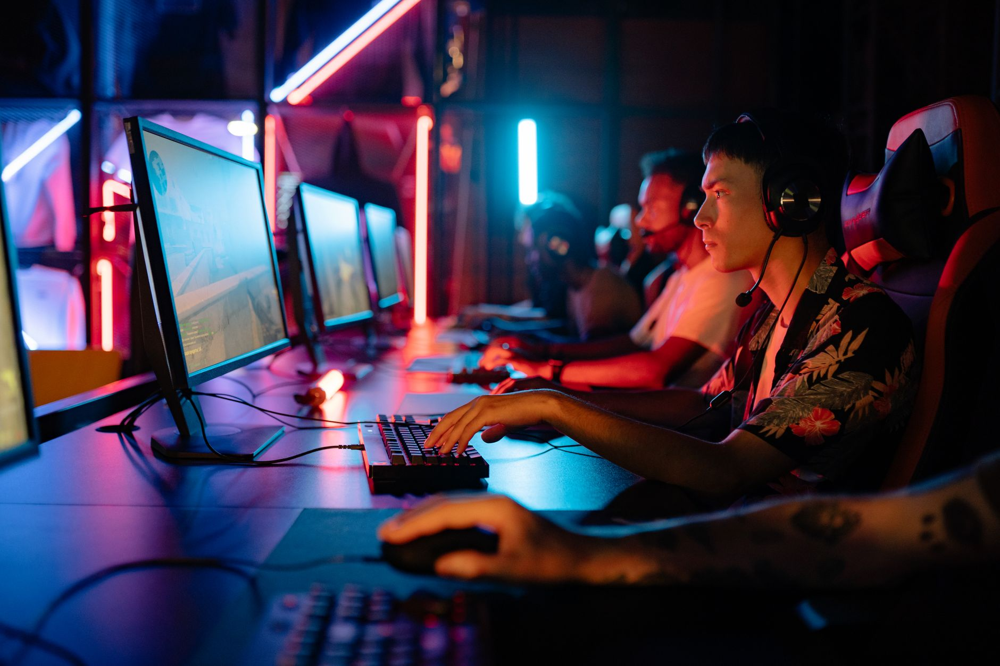

A sudden change in the tournament lineup
The esports community is buzzing following the official announcement regarding the participation of teams at the FISSURE Playground 3 event. Originally, the organization known as FUT was slated to compete against some of the most formidable opponents in the circuit. However, due to unforeseen circumstances and organizational restructuring, the lineup has undergone a significant modification. This change comes at a critical time as teams prepare for the intense tactical battles that define high-level play.
The decision to swap one organization for another is never taken lightly, especially when a major tournament is on the horizon. For the fans of FUT, the news is undoubtedly disappointing, as the team had been building momentum leading up to this event. On the other hand, the entry of Magic brings a fresh dynamic to the competition, offering spectators a new set of players to analyze and a different tactical approach to the game.
Who is magic and what do they bring to the table
Magic enters the FISSURE Playground 3 arena with a reputation for aggressive playstyles and high-octane execution. While they may not have the same established brand recognition as FUT in certain regions, their recent performance in online qualifiers suggests they are more than ready for the big stage. Their roster consists of players who have shown exceptional synergy in recent months, making them a dangerous dark horse in this tournament.
Analysts are closely watching how Magic adapts to the specific environment of the FISSURE series. The transition from practice servers to a live tournament setting can be jarring, but Magic has shown resilience in previous engagements. Their ability to handle pressure will be the deciding factor in whether they can climb the rankings or if they will struggle with the sudden influx of competitive scrutiny.
The impact on tournament dynamics
Every substitution in a professional tournament alters the mathematical probability of certain outcomes. With Magic stepping in, the bracket for FISSURE Playground 3 shifts significantly. Opponents who had prepared specific strategies to counter the playstyles of FUT must now scrap their notes and pivot toward understanding the tendencies of the Magic squad. This creates a chaotic element that often favors the more adaptable teams.
The sudden nature of these roster changes forces every team in the bracket to rethink their preparation and tactical approach almost overnight.
This volatility is part of what makes esports so engaging for viewers. Unlike traditional sports where roster changes often happen during the off-season, the digital arena moves at lightning speed. A single announcement can change the entire narrative of a tournament, turning a predictable matchup into a wild card scenario that keeps fans on the edge of their seats.
Challenges facing the replacement squad
While the opportunity to compete at FISSURE Playground 3 is a massive win for Magic, it comes with immense pressure. They are not just playing for a trophy; they are playing to prove that they belong in the upper echelon of the competitive scene. Replacing an established name like FUT means they will be operating under a microscope, with every mistake being scrutinized by fans and analysts alike.
Logistical hurdles also play a role in these sudden replacements. Coordinating travel, practice schedules, and technical setups on such short notice is a monumental task for any esports organization. Magic will need to ensure that their technical infrastructure is flawless to avoid any preventable errors that could hinder their performance during the live matches.
Looking forward to the competition
As the tournament dates approach, all eyes will be on the opening matches to see how Magic settles into their new role. Will they dominate the early stages, or will the lack of preparation catch up to them? The FISSURE Playground 3 event promises to be a showcase of skill, and this roster change has only added more intrigue to the proceedings.
The broader esports ecosystem continues to evolve through these types of shifts. We see a constant cycle of rising stars and falling giants, all driven by the pursuit of excellence and the high stakes of professional gaming. Whether you are a supporter of the original lineup or a new fan of the replacement team, there is no denying the excitement surrounding this event.
In the world of competitive gaming, stability is rare and trust is hard-earned. This reminds us of the complexities within team structures, much like when we discussed how Biguzera Reveals Lack of Trust in Esports Team in our recent deep dive into organizational culture. As teams navigate these changes, the human element remains as vital as the digital one.
See Also
If you enjoyed this Esports News article, check out Biguzera Reveals Lack of Trust in Esports Team for more useful reading.